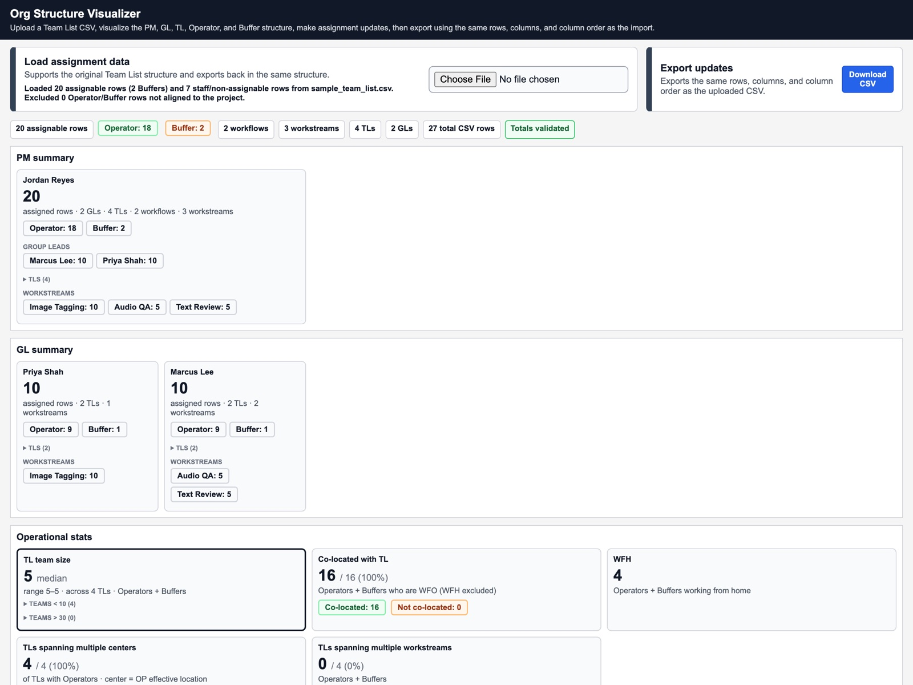
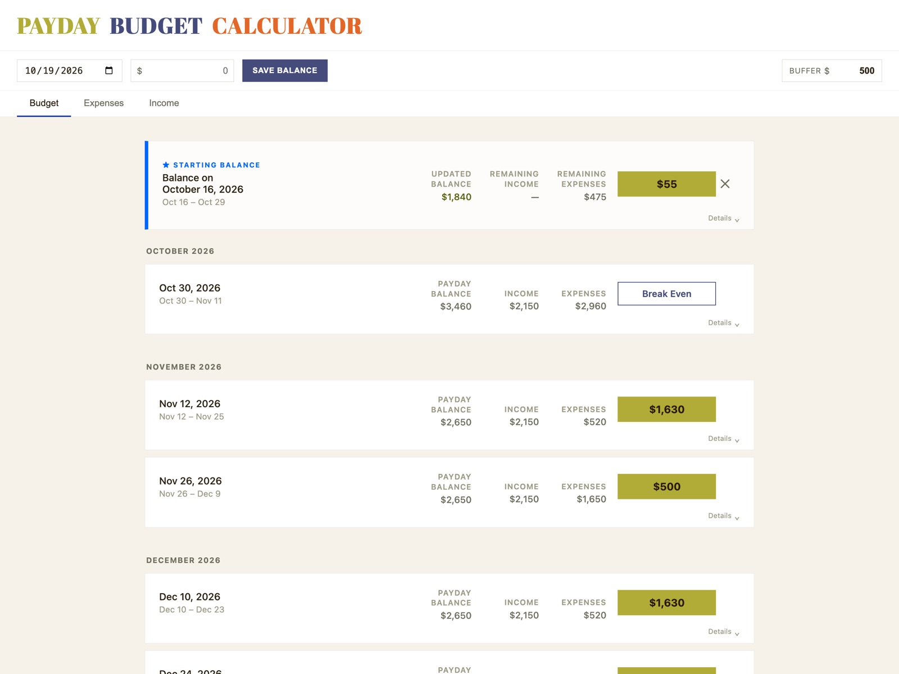
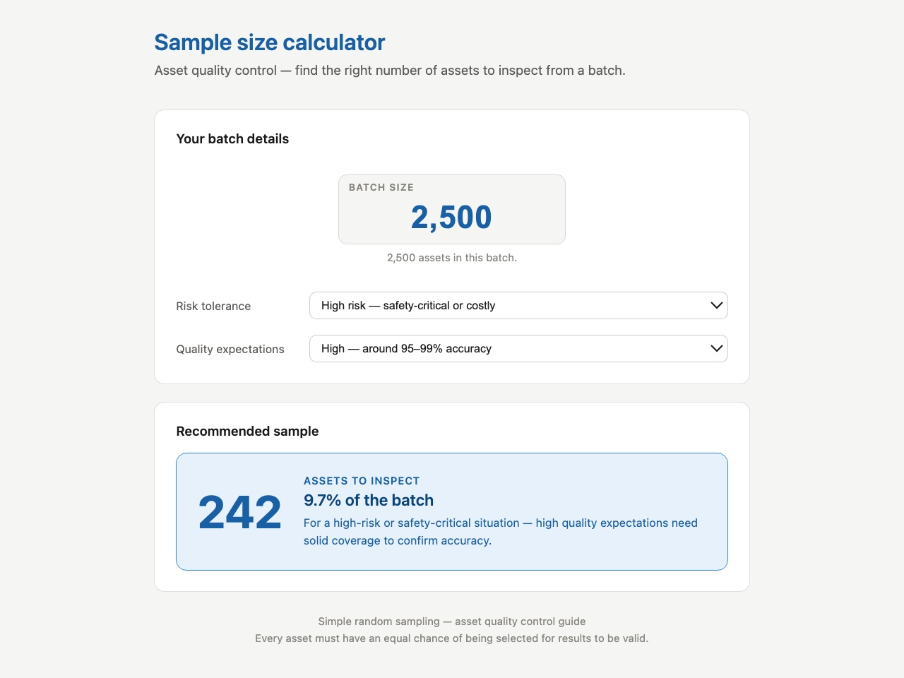

Projects


03Org Structure Visualizer
[One or two sentences: the problem it solves and who it's for.]
What it does
- Loads a team list CSV and maps it into project manager, group lead, team lead, operator and buffer roles.
- Summarizes headcount by manager and workstream, with operational stats like team size, co-location and work-from-home counts.
- Flags data issues, such as missing or mismatched employee IDs.
- Lets you reassign people and auto-balance team leads, then exports a CSV with the same rows, columns and column order as the import.
Built with
Why I built it
[What prompted it and what it changed.]
02Payday Budget Calculator
Projects your balance paycheck to paycheck, with a safety buffer, so shortfalls show up before they happen.
What it does
- Starts from a saved balance and a safety buffer you choose.
- Tracks recurring expenses and income sources, including paychecks that follow a schedule like every two weeks.
- Breaks the months ahead into pay periods and shows each period's income, expenses and projected balance.
- Saves everything in your browser, so nothing leaves your device.
Built with
Why I built it
[What prompted it and what it changed.]
01Sample Size Calculator
Inspection recommendations from batch size, risk tolerance and defect rate.
What it does
- Takes a batch size, a risk tolerance and a quality expectation.
- Recommends how many assets to inspect, as a count and as a share of the batch, with a plain-language explanation.
- Built for asset quality control using simple random sampling.
Built with
Why I built it
[What prompted it and what it changed.]
Experience
2024 — NOW
Data Scientist · iMerit
Built S3 → BigQuery pipelines and Looker Studio dashboards across Autonomous Vehicles, RevOps and Medical teams. Led cleanup of 16,000+ Salesforce records.
2022 — 2024
Solutions Architect · iMerit
Evaluated and deployed data tooling matched to each client's scope and budget, then refined workflows with delivery after launch.
2021
Data Science Intern · Inference Analytics
Prepared medical data for CNN models and built Tableau dashboards for patient follow-up scheduling.
2017 — 2020
Account Manager · Jet International
Managed global order fulfillment and inventory programs; $2.2M in gross sales in 2019.
About
I started in operations and sales, so I know what the people reading a dashboard need from it. Today I'm a data scientist at iMerit, building the pipelines and reporting behind autonomous-vehicle data projects. I have an MS in Analytics from the University of Chicago. [A line about life outside work.]
manual reporting
−89%
45 min → 5 min
salesforce cleanup
16,000+
records fixed · gaps down 60%
pilot optimization
>50%
less annotation time · became recurring
account management
$2.2M
gross sales in 2019